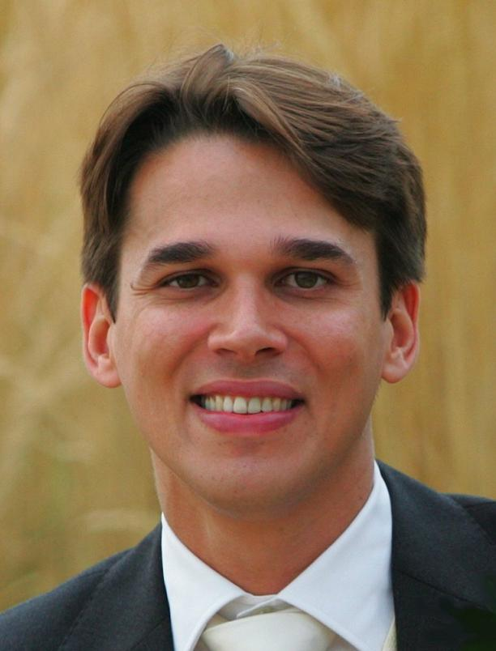

Dr. Paulo Oliva is a computer scientist with a Ph.D. in Theoretical Computer Science. He is a world-leading expert in Mathematical Logic and Proof Theory, with over 50 internationally recognized research papers.
Dr. Oliva is a reader (associate professor) at Queen Mary University of London (QMUL), where he is the leader in the final year Web Programming module and the MSc Functional Programming module, and he is the department's the Director of Outreach.
Dr. Oliva has an extensive background in programming, having won the 2nd place in the ACM ICPC South-American competitions in 1997 and 1998, and he is currently the main organiser of QMUL's annual programming competition.
He earned his BSc in Computer Science from the Federal University of Pernambuco (Brazil) and his Ph.D. in Theoretical Computer Science from the University of Aarhus (Denmark).